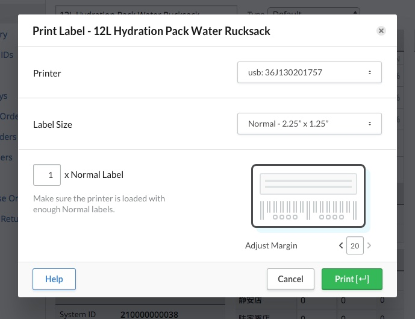
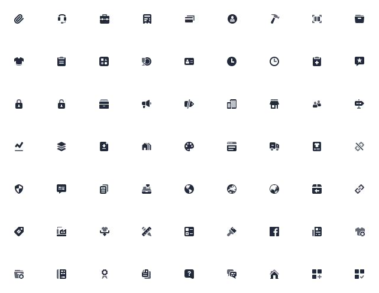
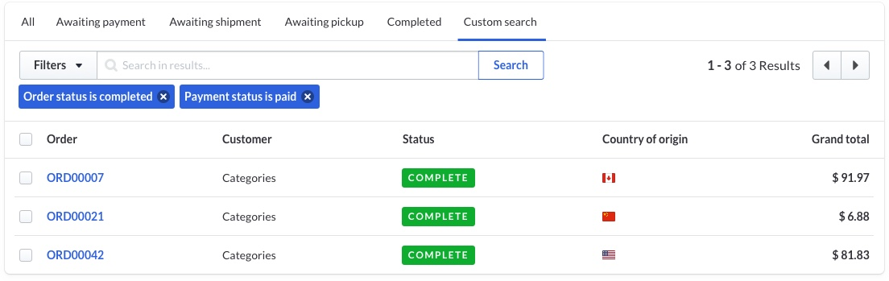
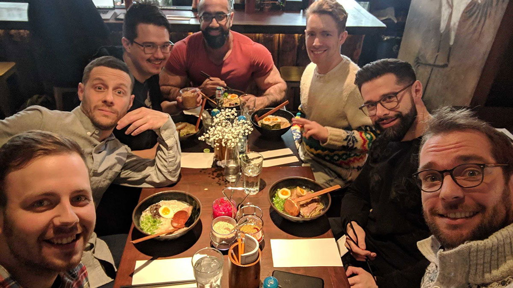
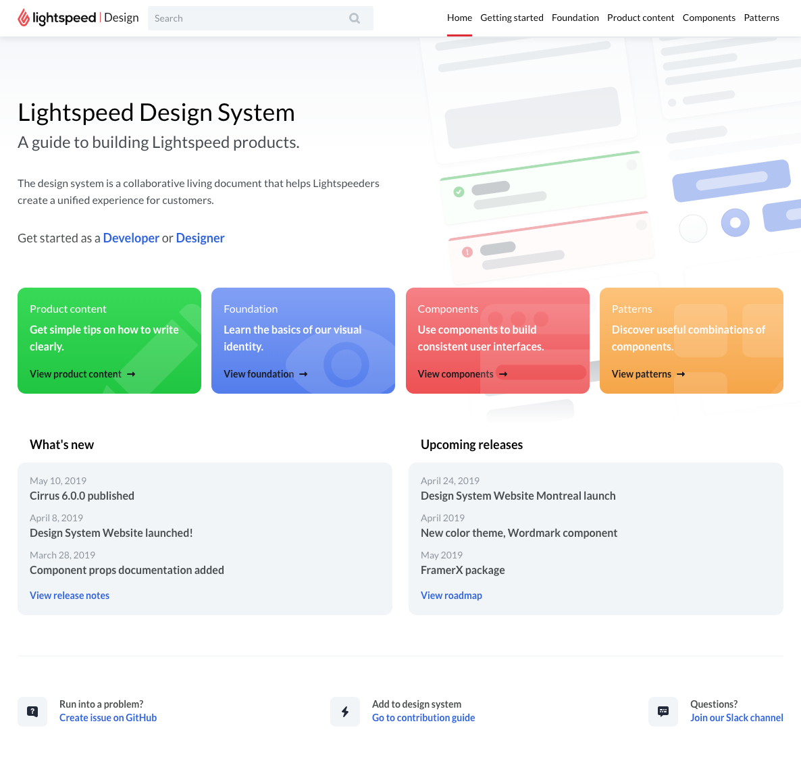
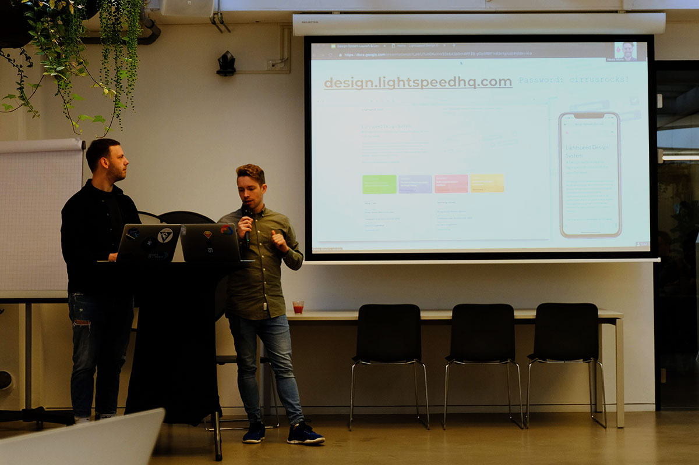

A Design System for a fragmented suite of products
With a company history wrought with acquisitions from the world over, Lightspeed was ripe for a way to
harmonize the divergent styles presented in its products.
The Flame design system is a collaborative living set of multidisciplinary tools that helps Lightspeed employees create
unified experiences for its customers.
My contribution to the project was to:
produce and evolve the team Sketch shared library,
use an innersource model to facilitate discussions and contributions between siloed teams of >20 front-end and designers,
build an ultimately successful business case to management for a dedicated Design Systems team,
develop the roadmap for the Design System and present this as OKRs to management,
design, write, publish, and evangelize a Design System Documentation website.
correctly identify, design, and include new components, patterns, and best practices into the Design System,
To date, the Lightspeed Flame Design System contains:
an Abstract-versionned Sketch library of shared components and styles,
> 30 components written in React and published to NPM
Product Content guidelines for writing within Lightspeed products,
a website of 51 pages documenting all components, best practices, code samples, and APIs for all components
Framer Classic and FramerX libraries for high-fidelity interactive prototyping using the Design System components
At the time of writing, Flame is in active use at Lightspeed by all web front-end teams. It powers 10 teams,
5 products, and 30 Lightspeeders to deliver value to our customers.
Company: Lightspeed POS
Team: Guillaume Lambert, Xavier Drdak, Maarten Afink, Karan Shahani, Kevin Vicrey
Role: Product Designer, Front-End Developer, Product Manager
Timeline: 2016-2019 (ongoing)
Status: in active use
How did this happen? What was my process?
1. Humble beginnings (CSS)
Starting in 2016, I noticed that most design work at Lightspeed was inconsistent at many levels. Having worked on a Design System
previously at EF, I understood how to this problem could be remedied. My first step was to find an allies among the Front-end development
guild. From there, we explored the idea of building a Design System, and how this might benefit UX Design and Front-end development.
The first few components were made from Sketch to CSS tokens. We decided to leverage a small project as a proof-of-concept.
Getting buy-in from PMs and other developers across the organization was critical: a small time investment up-front in exchange
for more quality, speed, and consistency in the future.

UI design for the Design System proof-of-concept (currently in production)
2. Growth & team buy-in (contributions & React)
Developers and designers were gaining interest in the Design System. All Designers were already using the Sketch and Framer libraries
we had created for ultra-fast UI design and prototyping.
Developers from other teams who saw value in this Design System started using it and contributing back to it. This was amazing!
Very quickly, the number of components available to us was growing due to the positive feedback loop that the team had initiated.
In an collaborative decision, the contributors decided to evolve the CSS tokens & shared components styles to React.
The move React components empowered designers to bring more types of components to the Design System.
For example, I worked to automate the creation of icons from Sketch-exported SVGs to
React icon components with customizable 3-tone style.

Sample of the icon set created as React components
3. Tabular expansion
Realizing the power the Design System and some lackluster features in some of our products,
I rallied designers from each of the major 3 web products from Lightspeed in order to collaborate on the
design and conceptualization of a Table component: arguably the most complex component we would have.
To be useful for all developers, designer and, customers,
this Table component would have to support many workflows and modalities. I led interface inventories, competitive
analyses, and many design workshops with stakeholders in order to get this right.
We agreed on a design which supported all of the features the Table should have:
listing,
search,
sorting,
filtering,
summarizing,
paginating,
and more,

Filter Table from the Flame Design System
Moreover, I built a total of 9 iterations of interactive prototypes for the Table's filtering behaviour in order to test out assumptions
about how the Table could be used. This test was massively successful in identifying the wins and flaws of the table.
During this process of building the prototype, I learned how to use map and filter functions,
fetch mock data from the network, optmize rendering, and write modular single-resposibility code.
I am very pleased that the Table is now an integral part of the Design System and in use by all product teams.
4. Birth of a team
After a year and a half of building the Design System in a distributed way, I pitched to key stakeholders
that the company should invest in a push to further increase the velocity of the Design System.
I put together a presentation outlining the benefits of speding dedicated resources to internal tooling. By attaching a dollar
value to the potential benefit of having a dedicated team, I was able to convince senior management to pull together people from existing
teams and new hires to form the Design System team. We are 4 developers and 2 designers. I fall into the latter, and also was bestowed
the responsibility of being Product Manager. This has been a huge challenge for me, since I have never received training on how to be a Product Manager.

The Lightspeed Design System team enjoying some Ramen 🍜
5. Hardening and evangelizing
With a newfound team and hopeful hearts, the team set out on improving the developer experience of using the Design System. This meant
moving from CSS tokens and webpack configs to CSS-in-JS (using styled system) and distributed builds for the React Components.
The improvements were significant.
From a previously difficult-to-navigate experience which might take a mid-level front-end engineer 2 hours to set up, we moved to a way of working
that required less than 2 minutes to set up.
The team now offered an easy-to-use solution for installation of usage of our UI components.
Gap analysis showed that our stakeholders (designers, developers, product managers, quality specialists)
we provided with very little guidance as to how, when, and why to use the components. For this reason,
I teamed up with the other Designer on the team to design, develop, and launch a comprehensive
documentation site for the Design System.
After working for about 2 months continuously, the MVP for our site was done. By launch, it contained:
Component documentation including example usage, copy guidelines, code playground, API documentation,
Pattern documentation for high-level components and component compositions.

Landing page for the Lightspeed Flame Design System
Creating the site was not enough. Lightspeeders needed to know what it was, why it was good for them, and how to access it.
With that in mind, I organized and held 2 "lunch-and-learn" events at Lightspeed offices (one in Amsterdam and one in Montreal)
to properly launch the Design System Documentation website. This launch resulted in a 60% increase in visits to the site
from the previous soft-launch initiatives.

Launching the Design System in Amsterdam
If you're still reading, and you can see the URL to the Design System Site (and password) on the photo above,
you deserve a visit. Be advised that the password is going away soon in favor of Google authentication.